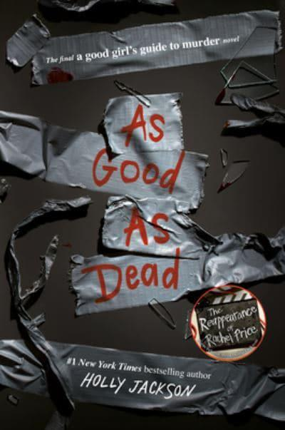

As Good As Dead is the third and final book in the A Good Girl's Guide to Murder series by Holly Jackson. This gripping mystery thriller follows the story of Pip Fitz-Amobi as she faces new dangers and uncovers shocking truths.
Here's the book cover:
Key Features of the Book:
Main Characters:
Book Details:
| Detail | Description |
|---|---|
| Author | Holly Jackson |
| Genre | Young Adult, Mystery, Thriller |
| Publication Date | September 28, 2021 |
| Publisher | Delacorte Press |
| Pages | 464 |
| ISBN | 978-0593379851 |
Synopsis:
Pip Fitz-Amobi is used to being in the spotlight for her investigative skills, but as she prepares for college, she finds herself embroiled in a new mystery that hits too close to home. When someone starts stalking her, leaving cryptic messages and clues, Pip realizes that her past actions may have dangerous consequences. With her life on the line, she must uncover the truth before it's too late. As Good As Dead is a heart-pounding conclusion to the series that fans won't want to miss.
Reader Reviews: